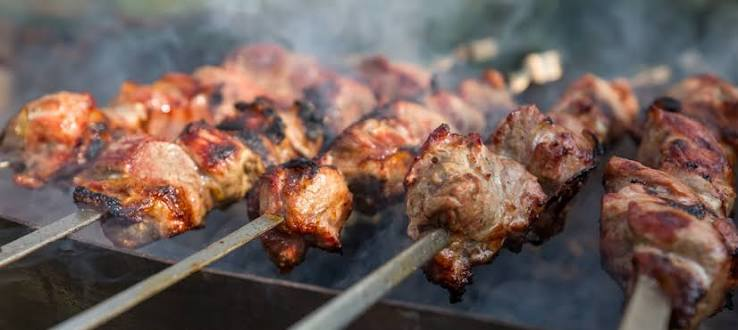

Why Karachi Biryani Is Different
Discover how Karachi created its own spicy biryani culture loved across Pakistan.
Read StoryKARACHI FOOD DISCOVERY PLATFORM
Discover Karachi’s iconic biryani, legendary BBQ, hidden dhabas, chai hotels and street food culture — all in one place.

Food Spots
Hidden Gems
WHY CHOOSE US
Secret food spots only Karachiites know.
Real taste of Karachi street culture.
Explore by Saddar, Burns Road & more.
History and culture behind the food.
FOOD STORIES
Every famous dish has a history. Discover the people, streets and traditions behind Karachi's legendary flavours.
Discover how Karachi created its own spicy biryani culture loved across Pakistan.
Read Story
Explore how Karachi's famous BBQ streets became a food lover's paradise.
Read Story
From old Saddar to modern restaurants, discover the journey of Nihari.
Read Story